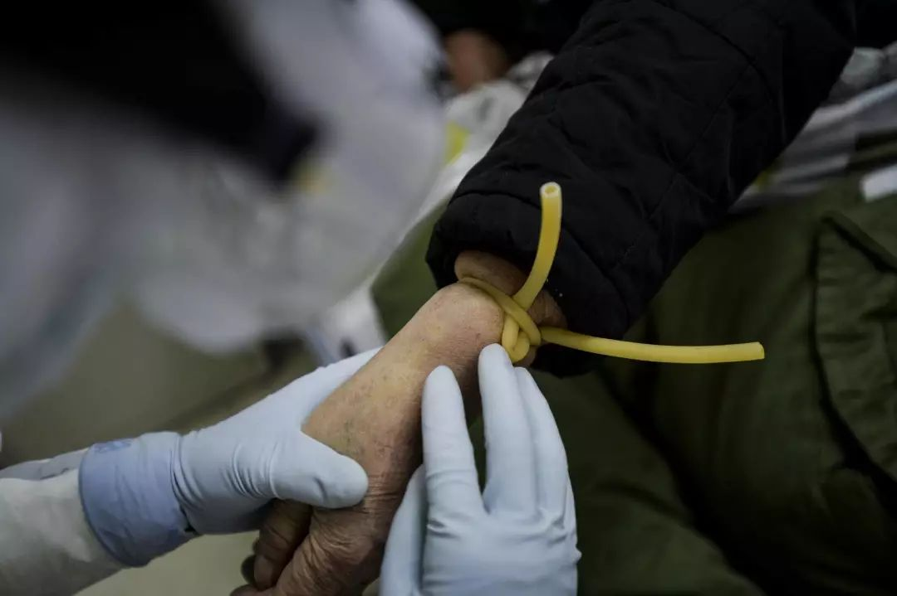
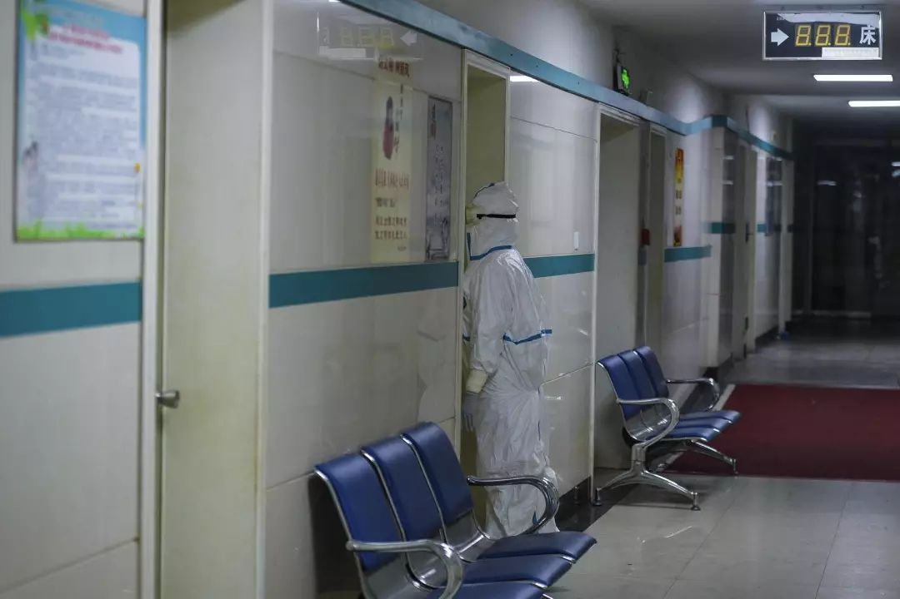
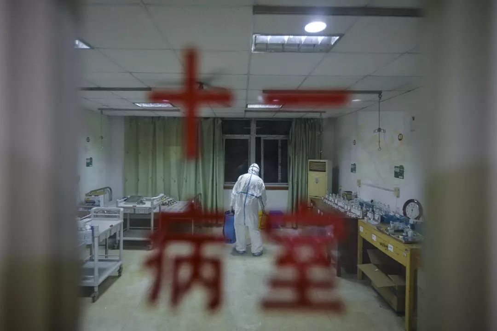
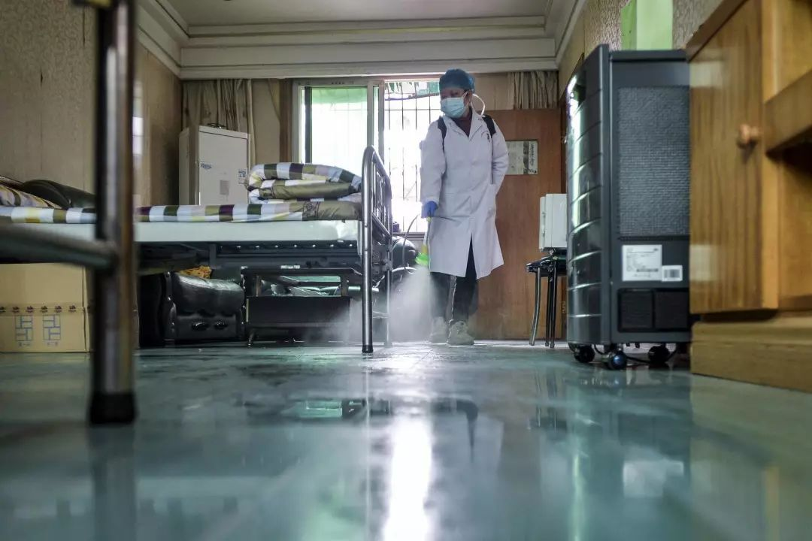

镜头下的武汉社区医院：临危受命的疫情最前线
原文链接 备份链接 疫情当下，武汉实行分类和分级诊疗体系，两百余家社区卫生服务中心进行患者初筛初诊。新闻摄影记者胡冬冬记录下社区医院的日常，这里是疫情防控的前沿阵地。 ··············· 连着几天，30岁的胡冬冬拍摄下一家社区 …

疫情当下，武汉实行分类和分级诊疗体系，两百余家社区卫生服务中心进行患者初筛初诊。新闻摄影记者胡冬冬记录下社区医院的日常，这里是疫情防控的前沿阵地。
···············
连着几天，30岁的胡冬冬拍摄下一家社区医院的生活。他是武汉一家新闻媒体的摄影记者。1月27日，他因工作从湖北襄阳老家回到武汉，拍摄疫情中的人们与城市。这座他求学生活十余年的城市正处于疫情艰难时，而那些他平日就诊的社区医院，现已成为治“疫”第一线。
武汉封城次日，武汉市新型肺炎防控指挥部发布第7号通告明确：为解决发热门诊等候时间长、床位安排不及时等问题，对全市发热市民进行分级分类诊疗筛查，由社区进行初筛诊断。自此，武汉市两百余家社区卫生服务中心成为疫情防控链条上的重要环节。
自2月1日以来，青山区红钢城社区卫生服务中心清空三楼，紧急开办成疑似新冠肺炎和确诊轻中症患者的隔离病区。
“严格意义上来讲，社区卫生服务中心的空间达不到开设隔离病房的条件，因为隔离病房的构造很特殊，既需要通风，又需要跟其他外界有一个相对的封闭隔离。但现在情况特殊，疑似病例太多太多了，它要分担一部分压力。”胡冬冬说，在他去过的多家社区医院中，有三层楼的红钢城社区卫生服务中心已经属于空间条件比较好的社区医院。
截至2月10日，红钢城社区卫生服务中心仅有的30个床位已全部收满。“基层的社区卫生服务中心有中转站的作用，”胡冬冬说，“社区医院收治了一些轻症和中症的新冠病人，但是如果病人的病情加重，转成重症和危重后，就需要隔离病人送到定点医院去。”

2月6日，青山区红钢城社区卫生服务中心大门前，田文辉正在对医院一楼进行全面消毒杀菌。田文辉是医院的口腔科医生，由于人手紧缺，他肩负起抗疫期间的后勤保障和医院整体消毒杀菌工作。在医院开设疑似新冠肺炎和确诊轻中症患者的隔离病区之后，医院所在的钢城四街已进行封闭加强管控。

2月8日早上，苏杰等三位医生在电脑前讨论病人的病历和治疗方案。隔离治疗区的护士站也配置两台电脑，主要进行患者登记，问询病史，记录病程和护理记录。

2月8日早上查房时，医生们查看一位病人的病历和诊断书。

查房时，病人刘婆婆看到来查房的医生时情绪激动。医生们立即安抚她平复，医生表示，平复情绪更助于康复。在病人心中，一张医院床位的意义非凡。刘婆婆说，经过这几天的照料和治疗，她感到身体有了改善，呼吸不喘了，食欲也好了很多。

一位护士正在更换病人的氧气罐，接气口处需要使劲用扳手才能拧紧。

护士长小心翼翼将空氧气罐搬至待更换的区域。护士们的个头普遍较小，平时挪动氧气罐时较为吃力，又需多加小心。
2月7日，湖北省召开新型冠状病毒感染肺炎疫情防控工作例行新闻发布会透露，武汉医疗物资供需矛盾十分突出，防护服、口罩、护目镜、氧气供给均存缺口。武汉市肺科医院院长彭鹏在发布会上表示，目前除了人员、防护用品紧张以外，还有一个突出问题就是氧气供应。
“目前我们医院氧气用量已达到日常用量峰值的10倍以上，任何一家医院在进行设计的时候，都不可能按照现在这种极端情况来进行氧气设计，目前我们呼吸机需要氧气。”彭鹏说。

病房里，护士王曾准备为病人打针。这是一间被临时改造的病房，之前可容纳下六张床位，但现在出于安全考虑，只设了两个床位。

由于佩戴的护目镜内壁起雾有水汽，王曾在为病人打针时需要非常小心，她反复轻拍、擦拭病人的手背，以确认血管的位置。

2月8日早上给病人做治疗前，两位护士再次核对给病人的用药。

做完所有的治疗后，两位护士在药物配备室等待接下来的指令。

2月8日，护士胡文会给下一位病人打的药做标记。她的防护服上写的“会会”，是同事们叫她的小名。

2月9日深夜，两位家属推着病人来到医院，当班的医生苏杰从三楼下来为他们开门。上三楼的电梯门上贴着临时的避让通知：为避免交叉感染，请居民不要从此通道通行。


2月9日深夜，值夜班的护士程娅萍，需要查看每一位用氧的病人的氧气罐含量是否充足。

程娅萍重新核对给病人配好的次日服用的药，以免出错。

2月10日凌晨，做完所有计划工作后，值夜班的护士程娅萍挨个查看每个病房的病人是否睡去。

2月10日凌晨，在这间被临时改造成药物配备室的病房里，程娅萍对全屋进行消毒，这也是值夜班的护士的工作之一。

2月10日凌晨，在做完所有计划工作后，程娅萍坐靠在墙边放松。如果左边的呼叫机响起，她便要立即去病房查看情况。
“大家都很忙很累，非常忙非常累，休息的时间也不多。但现在就是疫情这么严重，人手这么缺，所以必须所有人都得咬牙坚持，是这样的。”拍下这一幕，胡冬冬心里也挺难过：“现在武汉市所有的医疗人员基本上都在前线咬牙坚持着，很多人睡很少。”

2月10日，三楼部分病房被临时改造成休息室，谢恩梅护士长关上门准备进入隔离病房。 作为临危受命的病区护士长，她已经在隔离区守护了10天。

2月10日早晨，心电图科室的周文新医生和谢恩梅清理防护服穿戴间的医疗垃圾。

2月10日早晨，周文新正在护士休息室进行消杀。因为人手紧缺，她负责每日的隔离病区的后勤保障，消杀，以及清理医疗垃圾。

由于医疗物资紧缺，医护人员们的护目镜都需要反复使用。每次在隔离病区佩戴之后，他们便用酒精为护目镜进行消毒，再用紫外线灯照射半小时以上。
一线医护人员的防护问题始终是牵动外界的问题。直到2月14日，全国医护人员在疫情中的感染数据首次被公布。国家卫生健康委副主任曾益新在发布会介绍，2月11日24时，全国医务人员确诊病例1716例，占比3.8%。其中有6人不幸死亡。医务人员确诊病例中湖北有1502例，占全国医务人员确诊病例的87.5%，其中武汉市占1102例。

2月10日，护士正小心翼翼从病人鼻腔中进行核酸检测采样。之前从口腔取样容易引起病人口沫飞溅，造成更大传染危险。此外，为了提高隔离的安全级别，红钢城社区卫生服务中心的二楼所有科室已经停止使用。
2月15日，胡冬冬拍摄完新沟桥街社区卫生服务中心。“这个病毒传染性确实非常强，我们也在医院里采访的时候也有一点担心。即使尽量做好了防护，但是也不确定我是不是哪一次就被传染上了。”胡冬冬说。他接下来还要继续拍摄社区医院。
“但是这个事情发生了，你又是记者，而且又发生在你自己的家乡。你难道不要去，这时候你必须有职责去记录和见证武汉的封城之后的各种各样的变化和事情，对不对？”
疫情期间，在这个国家的各个角落，数不清的个人体验正在同步发生。我们希望对这段特殊时期的个人经历加以收集和呈现，以此作为一种记录与见证。图片、文字、视频……任何介质、任何形式的个人记录，都可以发送给我们。您可以选择将你的故事或者想提供的线索发送邮件至gqreport@163.com ，也可以点击阅读原文，在问卷中上传与填写您的答案。


在公众号后台回复彩蛋，送你一个彩蛋
撰文：欧阳诗蕾
编辑：靳锦
摄影：胡冬冬
运营编辑：肖呱呱


原文链接 备份链接 疫情当下，武汉实行分类和分级诊疗体系，两百余家社区卫生服务中心进行患者初筛初诊。新闻摄影记者胡冬冬记录下社区医院的日常，这里是疫情防控的前沿阵地。 ··············· 连着几天，30岁的胡冬冬拍摄下一家社区 …
原文链接 备份链接 *************▲************* 1月30日，医护人员在工作间隙为自己鼓劲打气。 （新华社 陈晨/图） 全文共*3942*字，阅读大约需要9分钟。 据我所知，有的社区医院医生已经被打了，这让我 …
原文链接 备份链接 澎湃新闻记者 赵思维 发自武汉 实习生 夏梦洁 从1月23日21时许发出第一条求助微博，25岁的新冠肺炎痊愈者武康发布了50余条微博，粉丝从1000涨至现在的179万粉丝。 这些微博记录了他从发病住不进院的无助、被病魔 …
原文链接 备份链接 1月28日，宜昌市第一人民医院第三次派出5名护士支援新冠肺炎定点收治的机构——宜昌市第三人民医院，5位护士先后到达。 刘瀚和张禹就是本次增援团队中的两名成员。此前他们在医院微信群聊内向上级表示：“志愿报名，随叫随到”， …
原文链接 备份链接 ··············· 武汉大学中南医院急诊科护士郭琴，是在1月13日确诊感染新型冠状病毒的。24日、26日，连续两次核酸检测呈阴性，经专家确认后，27日办理了出院手续。1月28日，出院第二天，她主动申请回到岗 …